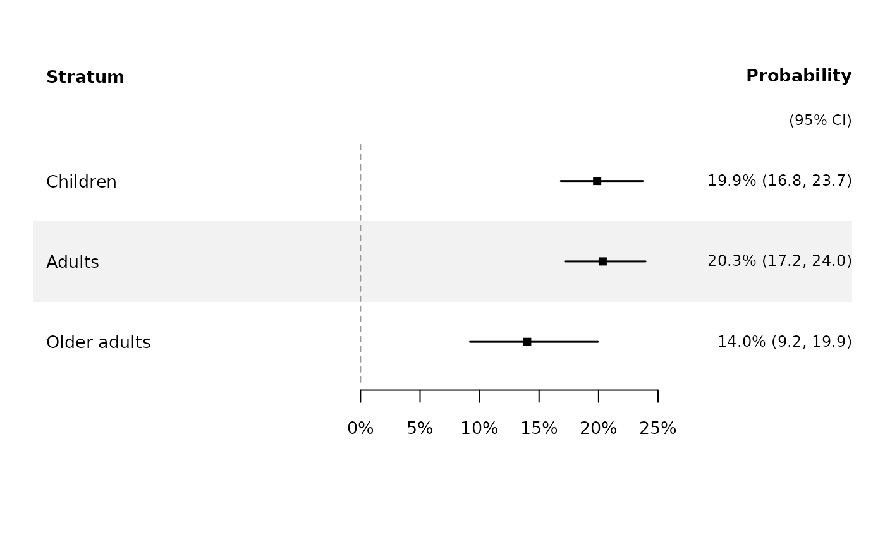

Forest plot showing posterior infection probabilities with 95% credible intervals. Supports single fits, multi-group fits, and combining results from multiple fits with section headers.
Usage
plot_infection_prob(
fits,
labels = NULL,
main = NULL,
file = NULL,
width = 8,
height = NULL,
xlim = NULL,
cex = 0.85,
...
)Arguments
- fits
A
seroreconstruct_fit,seroreconstruct_joint,seroreconstruct_multiobject, or a named list of fit objects. When a named list is provided, names are used as section headers.- labels
Optional character vector of custom labels for the strata within each fit. For a named list of fits, use a list of character vectors.
- main
Optional plot title.
- file
Optional file path for PDF output. Default:
NULL(current device).- width
PDF width in inches. Default: 8.
- height
PDF height in inches. Default: auto-calculated.
- xlim
Numeric vector of length 2 for the x-axis range (probability scale, e.g.
c(0, 0.5)). Default: auto-determined.- cex
Character expansion factor. Default: 0.85.
- ...
Additional graphical parameters passed to
plot().
Examples
# \donttest{
fit <- sero_reconstruct(inputdata, flu_activity,
n_iteration = 2000, burnin = 1000, thinning = 1)
#> 1000
#> MCMC complete in 28 seconds. Use summary() to view estimates.
plot_infection_prob(fit)

# }